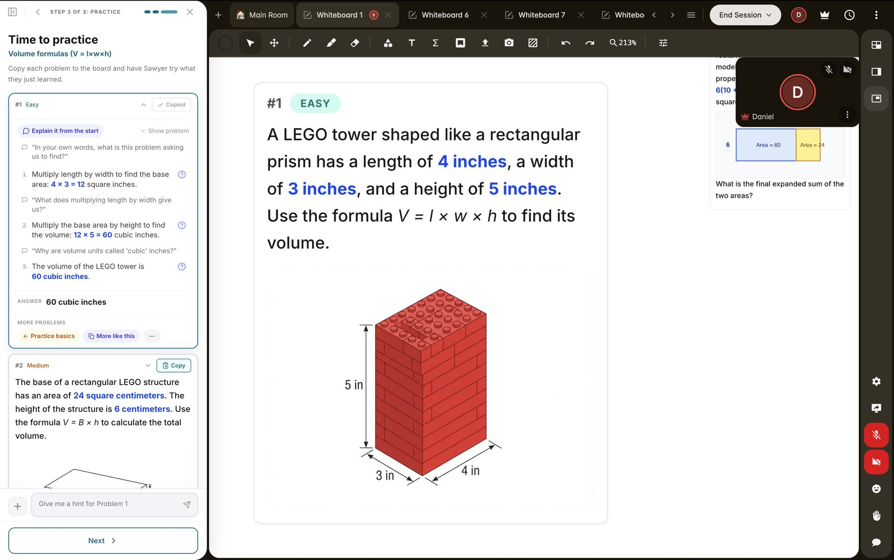
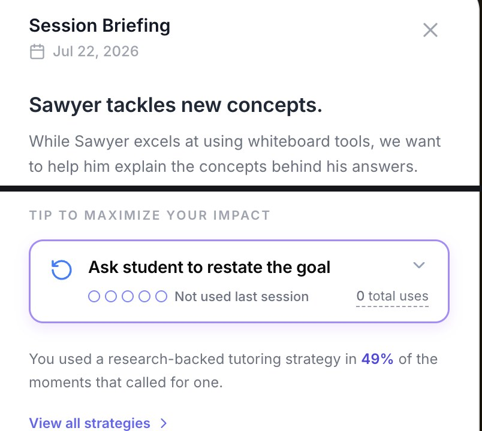

sidekick in a live session: scaffolded practice + shared whiteboard

from the live alpha: the briefing headline, and one coaching tip
01 · 2024—now · Co-founder, Head of Product & Technology
Sidekick
A master teacher, in every tutoring session.
Step Up pairs under-resourced students with volunteer tutors who drive 2–4 additional months of learning. Sidekick is the AI copilot that makes every one of those sessions better: it analyzes session recordings, briefs the tutor in one minute, diagnoses what the student knows, and generates the right next lesson.
- Watches every session: the recording (student work, dialogue, the tutor's own teaching moves) becomes a one-minute briefing before the next one.
- Coaches the coach with research-backed feedback on teaching moves like wait time, praise, and talk moves, plus suggested phrasing to try next session.
- A knowledge graph of skills spots prerequisite gaps, generates scaffolded practice with talk-moves baked in, and tracks mastery across sessions.
2–4 extra months of learning/1,000s of tutoring hours a week